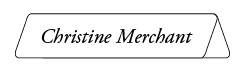
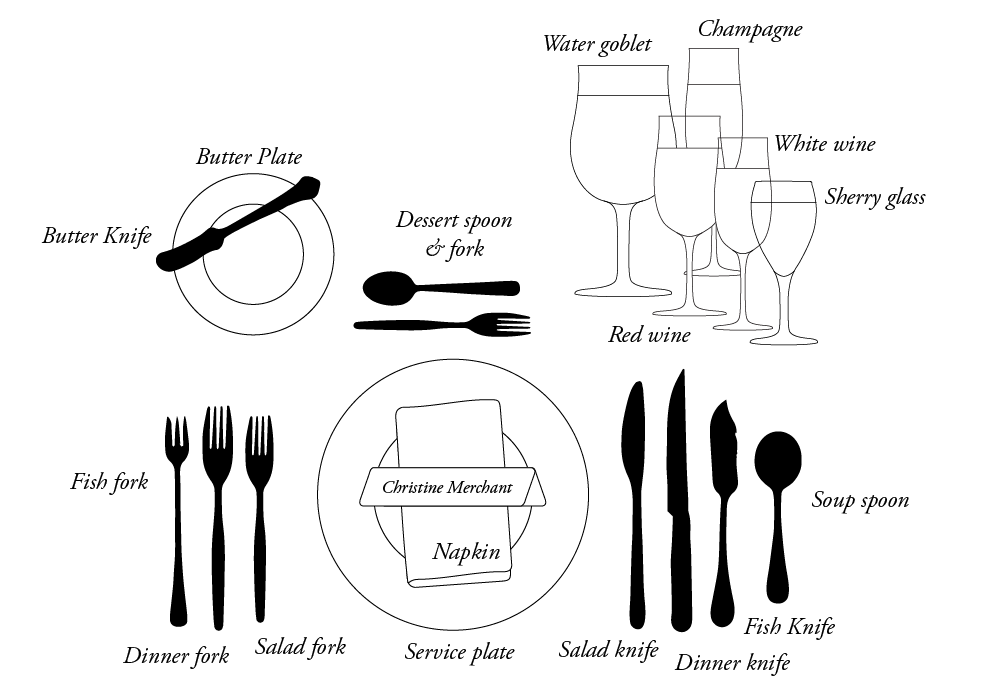

Table Manners
in Twenty Minutes
Points
I did not write this guide. I found it on the internet and wanted it to give it some love and make the self-quiz easy to do online. Living in New York City, I became more and more interested in good food, and I started to explore above and beyond my previous experience with fine dining. Out of a desire to learn more about etiquette after reading this New York Times article, I followed its suggestion to search for this woman's writing—and found it buried on a country club page that seemingly hadn't been updated since the 90s. I found it incredibly helpful, and approachable as well. I wanted to give it some love and make it more fun to work through. Table manners are not meant to exclude, but to instill you with a sense of ease. I hope you enjoy this resource and find practical guidance in it.
I wrote the first Table Manners in Twenty Minutes because I didn't know which fork to use. I was an officer of an insurance company and part of the job was attending lovely business dinners. I'd be the only woman there, and the men would look to me for guidance.
I was already nervous about the business issues, and then to complicate matters, I didn't know which fork to use. It was very intimidating.
So, I decided to write a book on table manners. All my friends said not to. "There are a million manners books out there, no one wants another one!" But there was one person: me. If I was the only person who benefited from the book, it would be enough.
I wanted facts, not opinions, and they were very difficult to find. I attempted to trace the rules of etiquette back to their origins. I wanted to see why they developed and why they were proper. I also wanted to know if these practices were still being observed.
Manners evolve. What's acceptable and proper today, may not be in ten years. Society changes, and with it, our needs and desires change, all of which is reflected in our customs and manners.
It was an issue of confidence for me. Now that I know what's proper, I'm more comfortable in social situations. This knowledge has given me the ability to decide if I want to observe a particular custom. Sometimes I choose not to.
For instance, I cut my lettuce and wear long gloves with my strapless cocktail length dress. Neither of which was traditionally considered proper. However, I do not ignore the basic principle of manners, which is always being polite to other people.
In this book, I've given you the closest thing to fact there is, what was traditionally considered proper, and what is being observed today. From there, it's your decision if you want to comply with them.
Why did we come out with a revised edition instead of simply reprinting the original book? I kept getting letters asking the same questions:
I realized people wouldn't have to write to me if I answered their questions in the first place. So, here we go with a new improved Table Manners in Twenty Minutes!
Yes, only 20 minutes! It's just not that complicated when you stick to "the rules. People believe table manners are very complicated, but many of them are common sense. The ones that aren't so obvious, we'll cover in more detail.
Manners, as defined by Webster's, are ". . . morals, social customs; breeding, social conduct, especially good." Etiquette, as defined by Webster's, is ". . . the forms of conduct or behavior prescribed by custom or authority to be observed in social, official, or professional life."
For our purposes, we'll define manners and etiquette as the way to behave, which is polite, customary, or traditional, and in many instances, will also avoid embarrassment.
No one wants to look foolish by accidentally drinking out of the finger bowl. The main reason to know the "rules" is to be kind, polite, and inoffensive.
The first rule of manners is never use your knowledge of manners and etiquette to put someone else down.
If you do, you aren't using good manners yourself, and you definitely aren't being kind. Only extremely rude people take pride in knowing "the rules" and pointing out someone else's lack of knowledge of the subject. They observe the letter of good manners, but not the spirit.
Always remember the true test of good manners is the ability to tolerate bad manners.
With these basic ideas established throughout this book, I will point out the traditional interpretation of proper etiquette. You must know the strictest rules. This way, if you're with your grandmother's friends, you'll know the rules with which they grew up.
Who you're with will influence your behavior. Also, always follow your hostess' lead (but don't spend the whole night staring at her). She sets the pace.
People who don't observe proper manners usually don't know any better. Be patient with them, and never rude or condescending.
If you're reading this book, you care about being polite. You're trying to improve your knowledge on the subject. Unfortunately, not everyone reads the same book, and some people never read a book on manners.
Set an example for people. People will imitate you if you are graceful, kind, and a joy to be with.
The best hostess puts her feelings aside for those of her guests. Her guests always come first. She notices and takes care of anything that might make any of her guests uncomfortable. She is the epitome of unselfishness. That doesn't mean she doesn't enjoy herself, just that she makes sure her guests are enjoying themselves first.
A formal dinner invitation will go out three to four weeks ahead of time. Dinner will normally be at eight or eight thirty, but it can range anywhere from six to nine. The invitation will probably say "R.S.V.P." This is French for, "Repondez s'il vous plait," which in English, means, "please respond."
When you receive an invitation that says "R.S.V.P.", you have a responsibility to tell your potential hostess whether or not you will attend. Your hostess has asked you to respond, so she will know how many people to expect. This is very important to her because she needs to plan details, such as seating, how much to buy, and any needed help.
People often fail to respond, or respond late. That is extremely rude. The only thing worse is to fail to respond, and then show up anyway.
Your hostess needs to know how many people to plan for, and if you don't respond, she'll have to assume you aren't coming. If you then show up, she won't be prepared.
The invitation will specifically say who is invited. If it doesn't say "and family," your children are not invited. If you're single, and it doesn't say "and guest," then you are not to bring an escort.
Please don't call your hostess and ask her if you can bring your children or your date. She hasn't invited them for a reason. It may be she can't afford to entertain every single person's date, but she wants you there. If you ask her if you can bring your date, she will probably feel obligated to say yes, and then all the other single people will wonder why their dates weren't invited.
Your initial concern will be, "what do I wear?" If you're going to a restaurant, and you haven't been there before, it's a good idea to call ahead and find out what is acceptable. If you're going with another couple, it's also a good idea to find out what the other couple is wearing.
You don't have to ask the other couple what they intend to wear, but it's nice to know if the other gentleman is going to wear a tuxedo, so you can at least wear a dark suit and not a sportcoat.
If you're going to someone's home, and they didn't specify in the invitation what you should wear, simply call and ask what is appropriate and what they will be wearing. (If the R.S.V.P. is to be by phone, ask when you respond.)
White tie is "formal attire." You don't see it very often anymore. If you get an invitation that says "white tie," it means the man is to wear a tailcoat, a white bow tie and a white vest. The shirt will have winged collars, and he wears a waist coat not a cumber bund.
The woman will then wear the most formal dress that is in style at that time. Women's styles change much more quickly than men's, and what is formal this year may not be next year.
Black tie is just below white tie in formality. You will see this much more often than the formal white tie. Black tie was traditionally called "informal." But today informal normally means casual. Black tie means the man is to wear a tuxedo, and the woman wears an appropriate formal dress. The shirt will not have winged collars, and it must be a pleated shirt, not ruffled. He may wear a cumber bund or waist coat.
You will frequently see "black tie optional." That means if you own a tuxedo, you should wear it. If you don't, wear a dark suit.
If the invitation just says "black tie," and you don't own a tuxedo, rent one. Do not show up in a dark suit.
If you're going to a wedding before six o'clock, don't wear your tuxedo. You may, however, wear it to a wedding which takes place after six o'clock.
If you're sending an invitation, it is best to specify white tie or black tie instead of formal or informal. Today, many people are confused when they receive an invitation that says informal, "Now do they mean black tie, or casual?"
Ascots received their name from a sporting event, which by nature makes them less formal than a tie. They may be worn for formal day time events, and informal occasions with an open neck shirt. They should not be worn in place of a tie for a formal evening event.
There are very few things that are so black and white for women. But there are a few, and they have to do with the colors black and white.
Can a woman wear black or white to a wedding? Black is always appropriate for any dressy event, including a wedding. But many people frown on white for wedding guests. They believe only the bride should wear white.
If you have another suitable dress that isn't white, select it instead. If the only nice dress you have is white, wear it anyway. The bride may not care, but she will care if you aren't at her wedding.
When can you wear summer clothes, in particular, summer white clothes and shoes? You can wear summer clothes and summer white confidently between Memorial Day and Labor Day.
The traditional rules governing hats and gloves are different for men and women.
Traditionally, a woman who wore a hat would also wear gloves. She may wear a hat and gloves outside her own home, but not inside her home.
When a woman wears a hat, she does not need to remove it until she returns home. In a theatre or somewhere similar, she may remove it as a courtesy, since her hat may obstruct the view of someone behind her.
A hat and gloves are perfect for weddings, luncheons, and formal teas. A hat is not worn to a formal evening event. Instead, a woman adorns her hair with jewels, flowers, or feathers.
Gloves do not require a hat. A woman wearing dress gloves doesn't remove them when she goes inside, shakes hands, or dances. It used to be said that only the queen leaves on her gloves when shaking hands. Today, all women are permitted to leave their gloves on until they sit down at the table.
Gloves that go above the elbow (eighteen button gloves) are worn with full length formals. Wrist length gloves and gloves that extend to the elbow are worn with street length formals. Jewelry is worn inside gloves.
A woman removes her gloves when she sits down to eat or have tea and before she arranges her napkin. Even if the woman is a guest in someone else's home and is asked to pour the tea, she should remove her gloves. She may place them on her lap, a nearby chair, or even on the floor, but never on the table. The same holds true for a purse, never place it on the table.
Men remove their hats when they go indoors. When a man greets a woman outdoors, he raises his hat, and tips his head. Men wear gloves outdoors only, never inside, and they never shake hands in them.
Women go through doors first and down stairs last. If there is any sort of potential difficulty, like in a crowd, the man goes first.
A gentleman walks on the street side when he's with woman. The custom originated so he could block anything thrown up from the street by a passing carriage.
Introductions, handshakes, and guests of honor all have one thing in common, the person who is senior in any way is first. A woman before a man; an older person before a younger person; a person holding an important office before your next door neighbor.
When introducing two people, the name of the person who is senior is said first. The name of a woman before a man, (unless he's the President); an adult before a child; an older person before a younger person.
For instance, "William, this is my husband Mike Merchent. Mike, this is William Shakespeare." The proper response to an introduction is, "How do you do."
Men rise during an introduction. Ladies rise for someone of considerably higher rank than themselves, by age or office. It isn't necessary for a woman to rise when meeting a contemporary. A hostess, however, must always rise to meet her guests.
A gentleman never sits when a lady is standing. If a woman comes by your table and stays for a long time, a gentleman may sit only if he invites her to join them, and she does sit down. A lady will find a reason to sit down so the men may also. It is best if time spent at another table is brief.
Handshakes used to follow a similar order. The person senior in any way offered their hand first. An older man offered his hand to a younger man, a woman to a man, an older woman to a younger woman, and so on. Some people still follow this practice.
Today, more commonly, offering your hand is considered a gesture of friendliness, not disrespect. A man may offer his hand to another man when they meet, regardless of age. Men shake hands when they meet. For women, it's optional. The man used to wait for the woman to offer her hand, but men frequently offer their hand to a woman, and it's considered friendly.
If you're uncomfortable as to whether or not you should offer your hand, follow the traditional order of precedence. Most people consider offering your hand a friendly gesture. Someone that is much older, or extremely distinguished, may expect to have the privilege of deciding whether or not to offer her hand.
You will hear a lot about guests of honor in all the etiquette books, including this one. It sounds a little bit like people go around having parties for each other and honoring each other all the time. Well, in fact, as you probably know, that isn't the case.
When I refer to the guest of honor, I mean it in a more open sense. I simply mean the guest who deserves the honor, or who you defer to. How do you decide who you should give the honors to? (For instance, this comes up in seating, and who orders first.) It's simple.
If you're with the boss' wife, she gets the honors. If you're with an older woman, she receives the honors. If you're with a senior woman in any way, give her the honors. And when you simply don't know what to do, be gracious, and give the other woman (or man) the honors. No one would ever consider you rude for honoring them in some way.
If you have cocktails before dinner, leave them there. Bring them to the table only if the hostess suggests it.
At a formal dinner, the host offers his arm to the female guest of honor, and they go into the dining room. The hostess and her dinner partner, the male guest of honor, enter last.
If there aren't place cards, the hostess will tell you where she would like you to sit. If there are place cards, the women sit down as soon as they find their places. Each man pulls out the chair for the woman on his right. The men sit down after the hostess is seated.
The person who made the reservations should tell the hostess your party has arrived. You will then be seated. The female follows the waiter and is seated first.
The hostess tells the guests where she would like them to sit. She will begin with the female guest of honor, if there is one.
If the waiter doesn't pull out the chair for the ladies, the gentlemen should. Again, the man pulls out the chair for the woman on his right.
The host and hostess sit at the ends of the table, the hostess sits at the end closest to the kitchen if at her home. The female guest of honor sits to the right of the host, and the male guest of honor to the right of the hostess. The seats of the next highest honor are to the left of the host and hostess. At a booth, the females sit on the inside of the booth.
If it works out where the seating is male/female, the host and hostess sit at opposite ends of the table. If not, the host sits in his traditional seat at the end of the table. The male guest of honor may sit across from him in the hostess' seat. The hostess then sits to his left.
Husbands and wives are not seated together. If there is more than one table, they should be seated at different tables, and the host and hostess would also sit at separate tables.
You're now seated at the table, the hostess (if there is one) puts her napkin in her lap first, and everyone else follows suit. Remember, always follow the lead of your hostess.
Your general posture at the table should be a straight back, with your hands in your lap, or forearms just resting on the table. Don't put your elbows on the table (just like mom used to tell you).
At a restaurant, you'll be asked if you would like something to drink and if you're ready to see menus. The female guest of honor always orders first.
It used to be that the man always ordered for the woman. This is no longer the case. Some women consider it an insult if a man orders for her without asking her if she would like him to do so.
The man should simply ask the woman, "Would you like me to order for you?" It is fine if the man orders for the woman. It is also perfectly acceptable if the woman orders for herself.
All the women's orders should be taken first, and then the men.
Some other general rules:
Party conversation, should be light, non-threatening and definitely fun. Give the person you're speaking to your undivided attention. Also, keep a mental check that you aren't talking too much yourself. Make sure at dinner that you speak with the person sitting on each side of you.
Don't discuss politics, religion, money, or sex. Those are very interesting subjects, but they're also emotional. A few glasses of wine, and a discussion of politics can ruin a perfectly lovely party.
You may say, "Tell me about yourself." But don't ask "What do you do?" If you'd like to know how they're employed, and they didn't offer, you may ask, "What is your profession?" It may be considered impolite however, since not everyone is employed. If they told you anything about themselves when you asked, they probably would have mentioned employment.
It is impolite to correct other people at anything, whether it be table manners, speech, or golf. Some people may appreciate a worthwhile comment, but be careful. The only time you should do so is when you are alone, you know the person very well, and you deliver the message with the utmost kindness.
If it's something noticeable and embarrassing, like a garment that is undone, or something on their face, tell them; don't wait until you're in private, just try to do it quietly.
When you discover something unpleasant has happened to someone else, the best thing to say is "I'm sorry."
When asked something you prefer not to discuss, you might say, "That's somewhat private," and attempt to change the subject. When in doubt, say "I don't know;" "I don't remember;" or, "I'm not sure." Even if it's a subject you obviously know the answer to, it communicates your desire for privacy.
The individual place setting for each person is called the "cover" and includes silverware, china, crystal, and linen. The cover is marked by a service (or place) plate. Each cover should allow for 16-20 inches in order to be comfortable, and not feel cramped.
Silver should be well polished, linens clean, and china and crystal spot free. The centerpiece should be short enough that guests can easily see each other over it.
Candlesticks are for nighttime, or late afternoon, when the curtains are drawn. If candles are used in the evening, they are to be lit. In the late afternoon, they are not.
Place cards can be centered on the napkin, or centered above the service plate. They should be used whenever there are eight or more people. If the guests don't know each other, it's helpful if the names appear on both sides of the cards.
If it's a small intimate gathering, you may use their first name. If it is a more formal gathering, you may wish to use their social title. Or you may choose to use their first and last name if you want to be a little more personal, but you're afraid the first name alone will not suffice.
Napkins are laid in the center of the plate, unless the first course is to be there when the guests are seated. In that case, the napkin is placed to the left of the place setting.
Napkin rings were originally intended for family members. Each family member had a napkin ring, and returned their napkin to the ring after each meal. The napkin ring identified the person's napkin, so they could use the same one all week. Since that's what people may think when they see a napkin ring, it may be best to use them for family only.
When you open the napkin, open it half way. When you leave the table after dinner, place your used napkin loosely (don't refold it) to the left of your plate.
Paper napkins are for outdoor parties. Indoor dinner parties require linen.
Which butter plate is yours? Your butter plate is the one on your left. Think of all the "leftovers" you keep in little "butter" dishes in your refrigerator.
When putting butter on your plate, it goes on your butter plate with the butter knife, not directly onto your bread. The same with jelly.
When eating bread, break off one bite of bread at a time, butter it, and eat it. Buttering the whole piece of bread is not proper. The exception would be if the rolls, muffins, or bread are hot. If you don't butter hot rolls right away, they'll cool off, and the butter won't melt.
Butter plates traditionally were not used at a formal dinner, because bread wasn't served. Today both bread and the accompanying butter plates are acceptable.
You're thirsty, and you don't know which water glass is yours. The glass above your knife, or to the right of your plate, is your water glass. Just remember that water ends in "R" for right. Water glasses are placed directly above the knife, and other beverage glasses are placed to the right and slightly in front of the water glass.
Before you take a drink of water, blot your lips with your napkin to remove excess lipstick or crumbs. Neither one would be very attractive on the edge of a water glass. Make sure your mouth is empty before you take a drink.
If your coffee cup is already on the table, it will be on your right, which is the same side all the other glasses go on. Coffee is not served during a formal meal, but afterwards, and normally in a separate room. Crooking your little finger when drinking from a cup is an old fashioned affectation. This means it was done simply for show. Luckily, it isn't done anymore.
Always take your spoon out of a cup or tall glass. Place it on the accompanying dish, or on your plate if necessary. Not on the table. If there isn't an accompanying dish, you may place the spoon on another plate. If there are no plates, leave it in the cup or glass.
If the salad is served with the main course, the salad plate will be set to your left. Just remember all food should be served from the left, and all beverages should be served from the right. It makes sense that glasses and cups are on the right, and plates are on the left.
The place setting pictured in this section would traditionally have been considered a less formal meal. It has a salad plate and coffee cup, but no service plate, champagne flute, or place card.
At a restaurant, the female guest of honor orders first, unless she wishes for her escort to order for her.
What if you can't pronounce what you want to order? Normally if the name is in French or Italian, the description is in English. Simply order by the English description. You don't have to know how to say it in French. Or ask the person taking your order to pronounce it for you, so you can say it the next time.
Glasses, left to right: water, champagne, red wine, and white wine.
The server will collect your menus and ask you if you want wine.
The traditional rule when selecting a wine is white wines with white meat such as chicken and fish, and red wines with red meat. That is just the traditional rule. Today, you can order whatever you like. For instance, many people now prefer white wine over red wine even if they're having red meat.
If you need advice, the wine steward can suggest a good wine to complement your dinner. Never feel obligated to get wine. Some people like it and some don't. You may wish to have cocktails with your dinner, or you may prefer not to drink during dinner. There is also the consideration of how much you want to spend, and a bottle of wine can add a great deal to the bill.
There are several different kinds of glasses. The person serving you, whether you are at a restaurant or someone's home, will know which glass should get the white wine and which glass the red. But we'll spend just a few moments on it because they're held differently.
If you're asked by the hostess to pour the wine, fill the glass only one-third to halfway. If it's white wine, it will get warm if you fill it too high, and even if it's red, many people swirl their wine to enjoy the bouquet (aroma) of the wine. Swirling is considered an art, and it cannot be done properly if the glass is too full.
Water glass - This is the largest glass. It will normally be filled when you're seated. It's to the far left of the glasses, just above your knife. It's held by the bowl of the glass.
Red wine - This glass is a little smaller than the water glass and will be just to the right of the water glass. This glass will be held by the bowl of the glass.
White wine - This glass is yet a little smaller than the red wine glass and will be the far right glass. It is held by the stem. White wine is served chilled, and if you hold it by the bowl, your hand will warm the wine. If you serve two wines, white and red wine, make sure you have two glasses for each guest.
Champagne glass - This glass is either tall and very thin or short and wide. It will be just to the right of the water glass and a little bit behind or to the left of the red wine glass. Champagne is served chilled, so hold it by the stem also.
When setting the table, if you get confused and can't remember the order of the glasses, the larger, taller ones go in back, and the smaller, shorter ones go in front.
Toasts are very special and need to be kept to a minimum to keep their significance.
The person making the toast may rise to make the toast if there are a great many people present. If it's a smaller gathering, they may stay seated.
The person making the toast raises his glass, says something pleasant about the person he's toasting, or even "To Mr. and Mrs. Smith!" Everyone raises their glass, clinks them gently, and takes a drink in honor of the person being toasted.
During a toast, the person being toasted does not raise his glass or take a drink, he simply remain seated with a polite smile. Only after the person making the toast has said his kind words, and everyone else has taken a sip, does the person being toasted say thank you, then drinks.
The female guest of honor is served first. All food is served from the left, and all beverages from the right. When being served at a home, the server moves counter clockwise, or to the right.
The server serves with the left hand, and picks up with the right hand. Dishes can be removed from either side, and they should be removed singly, not stacked.
At a formal meal, there is always a plate in front of each person. The first is the service plate. The first course is placed on it, and when it is removed, the service plate remains. When the next course is served, the two plates are exchanged.
If you are taking things from a serving dish, the spoon goes under the food, and the fork, tines down, holds it from above to steady it. The tines are the teeth.
When putting food on your plate from a serving plate, the intent is to keep the food on the serving plate clean. If you use a serving utensil on your food, it isn't clean anymore.
Most people believe it's correct to put gravy right onto your meat or potatoes, so long as the serving utensil does not touch the food. Not everyone agrees with this, so consider who you are with before you put the gravy directly onto your potatoes.
The table should have all plates and salt and pepper removed before dessert is served.
Wait until the hostess lifts her fork as the signal to begin eating. If there isn't a hostess, the female guest of honor lifts her fork as the signal. If that doesn't apply, simply wait until everyone is served, and then one of the women (if there are any) will pick up her fork, and everyone should follow her lead.
If the hostess says, "please go ahead," you're obliged to take her at her word. (Otherwise, everyone's food starts getting cold.)
Take small bites. Then, if someone asks you a question while your mouth is full, it's only a moment before you're able to answer.
Scoop up one mouthful at a time on your fork or spoon. If you take more than one mouthful, another is left. It's unattractive to have half eaten food remaining on the silverware.
Over the years, the order in which food is served has changed. Since the silverware is set to follow that order, you have to see how the restaurant or hostess serves their courses before you know which silverware to use.
Let's go over today's courses first, then in the next section we'll discuss which silverware to use. (Don't be afraid. It's all very simple.) The courses for a traditionally formal meal are discussed here.
First course - Normally seafood or soup, which can be hot or cold. This course is the appetizer. The seafood and soup may also be served separately.
Second course - Traditionally, this course was the main course of fish, meat, or chicken. However, now it is much more common for salad to be served as the second course.
Sorbet (pronounced soar-bay) - Many fine restaurants now serve a sorbet after the salad to cleanse your palate before your main course. (That just means it freshens your taste buds so the dressing from the salad doesn't overpower your dinner.)
Sorbet is simply a tiny bit of ice cream or sherbet, (similar to ice cream but much lighter) in a tiny little serving bowl or glass. It is usually served with its own tiny spoon. If not, use the dessert spoon above your plate. In some restaurants, you don't order this course, they just bring it to you. It's a lovely idea.
Third course - is now normally the meat, fish, or chicken. The salad used to be served at this point, and some hostesses and restaurants still do so. It is also acceptable to have the salad and main course served at the same time.
Fourth course - is usually dessert.
Between courses, the server may remove the crumbs on your table for you. This is done with a clean napkin and a plate, a small scraper, or even a small roller that will brush the crumbs up.

Your food comes, and you panic because you don't know which fork to use. The rule is start with the fork on the outside. That isn't reassuring enough for many people, so let's go into a little more detail.
The silver is set in the order it is to be used, with the first course's silver being on the outside. Forks (tines up) on the left, knives (cutting edge pointing in), and spoons on the right.
Remember, if the silverware you need isn't on the table when you sit down, they will bring it when that course is served.
Seafood fork - This fork is the smallest fork. It will have only three tines. (Tines are the teeth.) It's used with seafood, such as oysters and shrimp. It may be found to the far left of your place setting, or it may be resting in the head of your far right soup spoon.
Salad fork - This fork is larger than the seafood fork, but smaller than your dinner fork. It will have four tines but will be shorter and fatter than your regular fork.
Dinner fork - This fork will look like the ones you're used to seeing at home (may be called a place fork).
Dessert fork - This fork is smaller than your regular fork, and you can recognize it by its placstrongent. It will either be above your plate, or it will be set at the table during dessert.
Soup spoon - This spoon will normally be at the far right of your place setting or will be delivered with the soup. Traditionally there were two different types of soup spoons; one for the cream soup and one for any other soup. The cream soup spoon had a round head, and the other soup spoon was shaped a little more like a teaspoon. This spoon may be used as the place spoon.
Iced tea spoon - This spoon is longer than a regular spoon, and the head may be a little smaller than the teaspoon.
Teaspoon - This spoon will look like the ones you normally see at home.
Dessert spoon - This spoon is to be used with dessert and will either be above your plate, or it will be placed on the table at dessert.
Dinner knife - This knife is like the one you're familiar with at home (may be called a place knife).
Fish knife - This knife is used with the fish course seen in very formal dinners. It has a sharp point used to remove bones. The separate fish course isn't seen much in this country.
Salad knife - This knife is a bit small than your dinner knife and is used to cut your salad if necessary. They make cutting your salad acceptable, yea!
Steak knife - This knife is sharper and may have a serrated edge so you can cut meat with it.
Butter spreader- This knife is smaller and is found on your butter plate. It is used to butter your bread.
Why isn't all the silverware on the table when you sit down? It is inappropriate to set the table with more than three forks and three knives. Seafood forks and butter spreaders aren't counted when checking the three-piece maximum. So, if there is a seafood fork to the right of the spoons, you could have actually four forks.
Silverware is also called flatware. So silverware made of silver is sterling flatware. Spoons, forks, knives, and serving utensils are all considered flatware. Knives used to be called cutlery and were not considered flatware. Today knives are also considered flatware.
Sterling is flatware made primarily from sterling silver. Silver plate has a coating of silver over a base metal. Gold electroplate is similar to silver plate in that it is a plate of gold over a base metal.
Stainless flatware is made of a stronger metal, and requires less care since it can go in the dishwasher. Sterling and silver plate should be washed by hand, although I use my sterling every day, and I put it in the dishwasher.
There used to be a condescending saying, "They're the type who buy their silver." The implication was that people from the right families inherited their silver. Inheriting silver is wonderful, but many people don't inherit it and would like to have it anyway.
There isn't anything wrong with buying your own silver. It's wonderful if someone else gives it to you, but if they don't, that doesn't have to keep you from having it.
Registering when you get married is the perfect opportunity to pick things you may have trouble acquiring on your own. That doesn't necessarily mean you'll get what you ask for, but if you don't ask for it, it is unlikely you will get it. Also, you don't have to register for every thing that appears on the registry list. Only register for what you want and need.
When you're buying someone a wedding present, always buy something for which they have registered. The couple went to a lot of trouble to pick very specific things they want and need. If you buy them something else, it may not be in their taste.
That will leave them in a bind, because they'll probably keep whatever you give them. In addition, they may feel obligated to display your gift. Just remember how varied people's tastes are, and if at all possible select a gift they've already selected by registering!
When in doubt, use your fork. It's preferred over fingers, spoons, and yes, even knives! If you can eat or cut something with your fork, do so.
If you're at a formal dinner, it's the obligation of the hostess to serve food you can eat without embarrassment. For instance, corn on the cob would never be served at a formal dinner. The corn would be removed from the cob and served creamed or buttered.
If you're dining at a formal restaurant, they won't have pizza on the menu, but there will be foods that can be difficult to eat, like lobster. If you order lobster, you must be able to remove it from the shell delicately.
A lovely restaurant will probably remove it for you, but what if they don't? Lobster served in the shell, has to be removed with the tools provided, and it may require your hands. If you don't think you can manage it confidently, order something else.
Use a fork on cakes, fish, frozen ices, game, meats, oysters, pies, salads, and vegetables. A fork is preferred even for ice cream, and there is a new ice cream fork that is round like a spoon, but has tines on the end.
Asparagus - some say fingers, most say forks. To eat it with a fork, use the blunt edge to cut it into bite size pieces.
Spaghetti is eaten with a fork only. The fork is used to twirl the spaghetti against the side of the pasta bowl or dish. It isn't cut up, and a spoon does not assist the twirling of the noodles.
Spoons are for coffee, tea, soup, bouillon, custard, pudding, soft desserts, but not vegetables.
Eat from the side of your spoon, not the tip.
Spoons stir tea or coffee, but don't drink with them. After you have stirred your beverage, remove the spoon from the glass or cup. Place it on the serving plate beneath the glass or on the saucer beneath the cup. It does not go on the table cloth. If the glass does not have a dish under it, place the spoon on your plate.
If soup is served in a soup plate, leave the soup spoon in the soup plate and not on the service plate below.
Knives are used to cut. They are not raised to the mouth and definitely don't go into the mouth. Anything that can be cut with a fork, should be. Use the knives only when necessary.
Cut and eat one piece at a time. Never cut someone else's food, unless there are odd circumstances, such as a broken arm that prevents them from doing it themselves, or in the case of a child.
It depends on how formal the meal, and how difficult the food is to eat. In a casual situation, such as a cook out or a family dinner, things like chicken, pizza, and ribs may be eaten with the fingers. Use good judgement. Some things are obviously intended to be eaten with your fingers, such as:
When eating soup, dip the spoon away from you, not towards you. You may tilt your soup bowl, as long as you tilt it away from you. The same rule applies for the dessert if served in a bowl.
When you're finished eating your soup, lay the spoon on the edge of the plate it sits on. If it's not on a plate, leave it in the bowl. Do not put it on the tablecloth.
Can you cut your lettuce? Traditionally, the answer was "No." You used your fork to fold the leaves into bite size pieces, or the edge of your fork to cut it. Today, if there's a salad knife, it's acceptable to cut your lettuce.
It's believed the reason it was considered offensive was because knives weren't made of stainless steel, and the dressing's vinegar stained and discolored the knives. That is no longer the case, but some people still cling to the old rule. Remember to consider whom you're with when deciding what is appropriate.
If you need to take something out of your mouth, the traditional rule is, the way it went in, is the way it comes out. That simply means if a piece of watermelon went in your mouth on a fork, the watermelon seeds come out on your fork. If something goes in your mouth with your fingers, like a fresh cherry, then the pit comes out in your hand.
If you are uncomfortable using your fork to take something out of your mouth, you may remove something with your thumb and forefinger into a cupped hand. Then set it on the edge of your plate. If you need to remove something that has become lodged between your teeth, wait until you're alone to do so.
The American way of cutting is with the fork in your left hand and the knife in your right hand. Then lay the knife on the edge of the plate and move the fork to your right hand. Put the bite in your mouth with the tines facing up.
The European method is to cut with the knife in your right hand, fork in your left, and then lifting the fork still in your left hand to your mouth, tines down. The knife stays in your right hand all the time. Either method is acceptable.
Cut one piece at a time. Eat it, and then cut another. Between bites, lay your silverware down on your plate. It will keep you from inadvertently waving your silverware around when you talk with your hands.
Traditionally, if you dropped a piece of silverware, you were to leave it where it fell and simply tell a server, so they can bring you another. Today if you drop a piece of your silverware, and it is easily within reach, it's all right to pick it up. Give it to the serving person, and ask for another. If it is out of your reach, under the table, or someone else's chair, simply tell the server, and they will bring you another. (Don't use silverware that has fallen on the floor.)
In between eating, lay your silverware on your plate here. Do not lay used silverware on the tablecloth.
If a little bit of food gets on the table, you may pick it up with the edge of your knife, and place it on the edge of your plate.
If a server has spilled something, they attend to it. If it is something a guest has spilled, and it is quite a mess, the guest simply apologizes, and allows it to be cleaned up.
At a traditionally formal meal, there is no butter plate, or dessert soon and fork. Bread traditionally was not served with formal meals, and the dessert fork and spoon would be presented with the finger bowls.
Below are a few variations of formal meals. If you are hosting a formal meal, and you don't see a variation here you like, simply delete the courses you don't wish to serve. For instance, the separate fish course is rarely seen in the United States, however it is very common in Europe. Also at a formal meal, coffee is served in another room, not the dining room.
Sherry was served with the soup; a dry white wine with the fish. Red wine was served with meat, duck, and game. Champagne was served with dessert. If you've never had champagne and chocolate together, try it. It is absolutely fabulous!

These aren't very common anymore but you will still occasionally see them, especially if something messy like mussels or lobster is served.
A finger bowl will normally be brought after the main course. It will come on a dessert plate and will probably have a doily underneath. Simply dip your fingers (not your whole hand) in the water, and dry your fingers on your napkin. In restaurants, they will provide you with another napkin to be used with your finger bowl.
The finger bowl may also be presented with the dessert fork and spoon on either side of the same dessert plate .
If so, after you've used the finger bowl, move the dessert spoon and fork to the table on either side of your plate. Then lift the finger bowl and doily and place them above your plate and to the left.
If the finger bowl isn't served with the dessert spoon and fork, simply leave it where it is. A server will come and take it away.
You've finished eating. Now what do you do with the silverware that you were so worried about? You place it on your plate in one of these two ways (tines up). Never put a dirty piece of silverware on the tablecloth.
Don't push your plate away when you're finished eating. Simply leave it where it is. Someone will come and take it soon enough. Also, don't announce, "Boy am I stuffed," or "I couldn't eat another bite if I had to." Anything like that is considered rude. It is appropriate to say, "What a lovely meal this has been!" or something similar.
Keep your napkin on your lap until you are ready to leave the table. (It doesn't look very pretty right now.) When you're ready to leave the table for the evening, simply lay it loosely beside your place. You don't need to refold it.
There is absolutely nothing wrong with asking for something to be wrapped up so you can take it home, that is, if you're in a restaurant. I wouldn't recommend it if you are a guest in someone's home!
Also, if you're a guest in someone's home, and they serve a dish you really enjoy, it's considered a compliment by most people if you ask them for the recipe. However, on occasion, they may not be willing to give it to you if it's a family secret. So don't have your feelings hurt.
If you are splitting the check with another couple or a friend, simply split it down the middle, and don't worry about the exact amount each of you spent. The exception to this would be if someone will be cheated because they had a dinner salad, and you had a four- course dinner. In this case, make a fair estimate each person should contribute.
Don't haggle over the check. If you wish to pay for someone's dinner, it should be established that you are treating before you eat. Don't argue afterwards who is going to treat.
People simply don't agree on this subject. The name originally came from an abbreviation. Each letter in the word "tips" stood for the first letter in each word in the phrase "To Insure Proper Service." If you received proper service, you left a good tip. If you received poor service, you left a poor tip.
If you receive good service, 15 to 20 percent is considered a good tip, and your waiter or waitress will calculate exactly what percent you gave them. So it does matter.
What if you receive poor service? This is where the disagreements begin. What is a good tip, what is a bad tip, and what is unacceptable? If you've ever been a waiter or waitress, you're more likely to be lenient. People who haven't waited on tables seem to be less lenient.
Some people believe you should never leave less than 10 percent no matter how bad the service was. Other people say if the service was really bad, leave no tip or leave a penny. The reason people sometimes leave a penny is so the waiter or waitress knows the client didn't forget to leave a tip but was unhappy with the service.
If you're really unhappy with the service, leave a tip of 10 percent or less, and simply write to the restaurant management.
What about all those other people in a restaurant? The only time you give people (besides your server) a tip is when they go out of their way to provide you a service, or they give you a lot of attention. Simply seating you and handing you a menu does not qualify someone for a tip.
At a restaurant, for the proper service you may wish to give:
Tips should be based on the bill including the drinks before tax is added. If you want to leave 20 percent, simply multiply the bill by 10 percent and double it. When you multiply by 10 percent, you just move the decimal one place to the left. If the bill was $35, 10 percent would be $3.50, and 20 percent would be twice that or $7.
If you want to leave 15 percent, just take the 10 percent and add half again as much. So if the bill is $35, take $3.50 and add $1.75 to get $5.25. Or if you don't want to remember all that, just cut out the tip chart, and put it in your wallet!
You've made it through (likely) much more than 20 minutes of old-fashioned dining etiquette. Now you can dine in style!
points